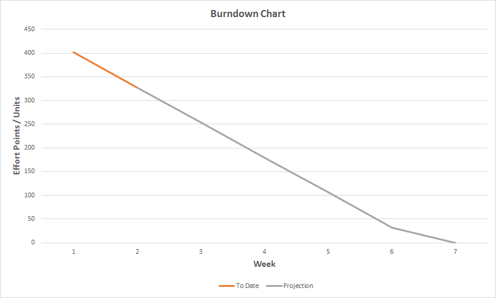

Team Autumn Frog
Team Members
MGT 656 - Class Project Software Development Project Sprint Report October 27, 2016
Burn Down Chart  Sprint Completed Stories
This sprint, we completed 15 stories.
The current backlog consists of 9 items, weighing in at an estimated 328 units of effort.
Accomplished:
Before the next report we hope to: